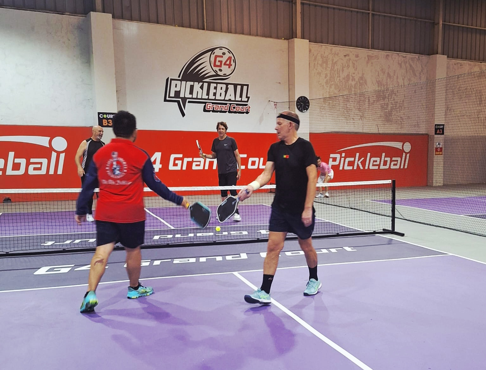

Da Nang has become one of Vietnam's biggest pickleball hubs — the city hosted the PPA Tour Asia-Vietnam event and has launched its own Pickleball Association. There's no shortage of courts here, from 14-court resort facilities to free public setups. We played at G4 Pickleball and analyzed the match with PBVision to see how it stacked up.

G4 is a straightforward pay-to-play indoor setup — 12 hard courts with reservations available, no membership required. That makes it one of the more travel-friendly options in a city where several of the bigger facilities (Furama, FPT) are membership- or private-access only.
The level on court was the strongest we found in Da Nang, mostly sitting in the 3.5–4.0 range — a solid step up from the mixed recreational play at some of the smaller free courts around the city.
The best way to find games here is the Reclub app — it's how local players organise open play and social sessions across the city's clubs.
Our take: an easy recommend — good competitive level, no membership hurdle, straightforward to book.
This wasn't just another pickleball session — we uploaded the match to PBVision and analysed what actually happened on court.
The model's top growth signal from this game: third-shot legality — one partner landed only 64% of third shots in bounds, the clearest opportunity in the data. Dinks were the strong point, with 87–94% consistency across the pair.
Watch the full PBVision breakdown →| Court quality | ★★★★★ |
| Quality of games | ★★★★★ |
| Ease of joining | ★★★★★ |
| Competitive level | ★★★★☆ |
| Value | ★★★★★ |
| Wanderers rating | 9/10 |
Would we go back? Yes, an easy recommend. G4 combined good competitive games with none of the membership friction we ran into elsewhere in Da Nang — the kind of stop we'd point any travelling player toward first.
The biggest dedicated pickleball facility in the city, spread across the Furama and Ariyana resort complexes. Purpose-built to international standard and used for major tournaments, but access runs through membership or resort guest status rather than casual drop-in.
Eight indoor acrylic and hard courts inside the FPT City development. Private access — courts can't be reserved by the general public — but there's an established local club, Eastern Mountain Top Pickleball Club, that plays here regularly at a beginner-friendly 2.0–2.5 level.
An 8-court fee-based facility, and the host venue for the PPA Tour Asia-Vietnam event — a sign of how seriously Da Nang has taken the sport's competitive side.
Three free indoor courts, concrete surface, with food and a pro shop on site. One of the few no-cost options in the city if you're just looking for a casual hit.
No membership needed, easy to book, and the strongest level we found in the city.
The best way to find open play and social sessions across Da Nang's clubs — this is how local players organise games.
Several of the biggest facilities — Furama, FPT — are membership or private access. Worth confirming before making the trip out.
This is a city that's hosted PPA Tour Asia events — expect a genuinely competitive scene, not just resort courts.
Not every venue has demo equipment on site, especially the smaller pay-to-play courts.
Da Nang was one of the best surprises on the route — a genuinely serious pickleball city with options at every level, from free public courts to a 14-court resort complex that's hosted international tournaments. G4 gave us exactly what we wanted as travelling players: no membership friction and a strong, competitive game. Easy to recommend as a stop.